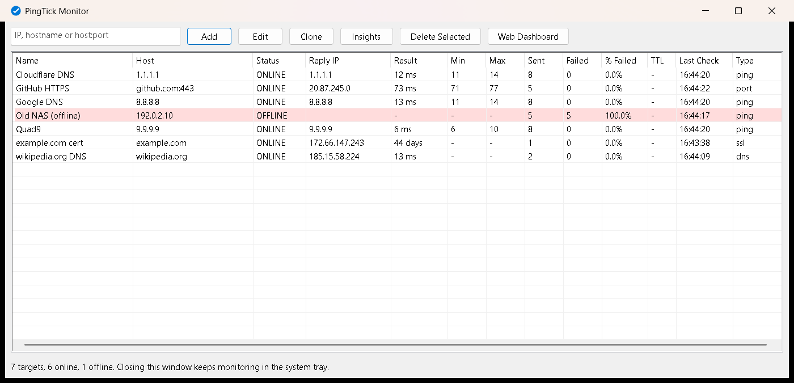
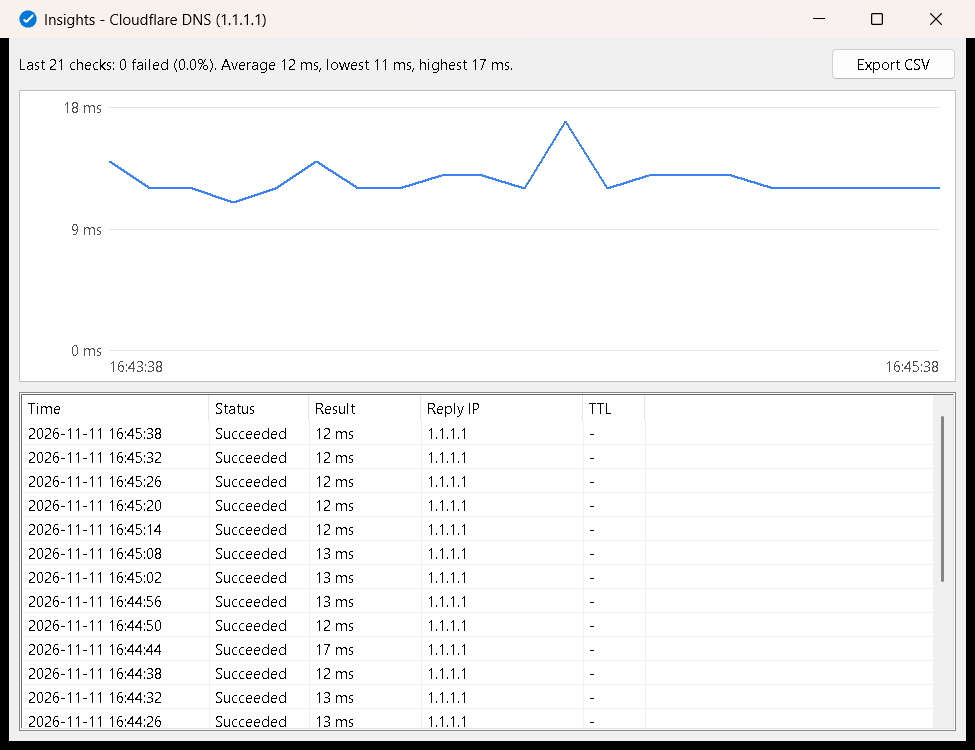
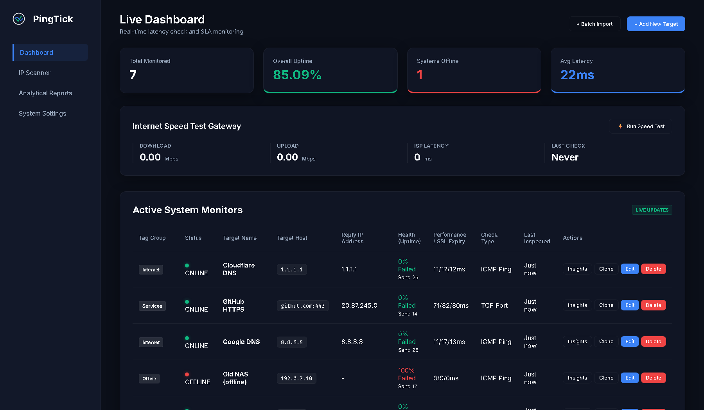

Know the moment your network goes down.
PingTick watches your routers, servers, ports and certificates around the clock, keeps a history of every check, and messages you on Telegram or email when something drops. It's one small portable app with no installer and no account.
| Name | Host | Status | Result |
|---|---|---|---|
| Core router | 10.0.0.1 | ONLINE | 2 ms |
| File server | 10.0.0.20 | ONLINE | 1 ms |
| Cloudflare DNS | 1.1.1.1 | ONLINE | 12 ms |
| Web shop HTTPS | shop.example.com:443 | ONLINE | 48 ms |
| Shop certificate | shop.example.com | ONLINE | 12 days |
| Branch VPN | 10.8.0.1 | OFFLINE | – |
| Office printer | 10.0.0.45 | ONLINE | 3 ms |
A fast native table, with history behind every row.
PingTick opens as a plain Windows window, not a browser. Close it and it carries on monitoring from the system tray.



Everything a ping window should have done.
Telegram and email alerts
Set how many failed checks count as down, so a single lost packet doesn't wake you. You get a second message when the target comes back.
Every check is saved
Results go into a local database. See what happened overnight, chart latency per target, and export proof for your ISP.
Certificate warnings
Get warned 30, 14, 7 and 1 days before a website's certificate expires, and again if it lapses.
IP scanner
Sweep up to 4,096 addresses, see what answers, and add the devices you care about in one click.
Uptime reports
Uptime and latency per target for today, yesterday, the last 7 days or any range, as PDF or CSV. An optional daily summary is sent to you.
Safe for screen sharing
Your public IP and ISP stay hidden unless you choose to show them, so remote sessions and screenshots don't leak them.
Running in under a minute.
Download the zip
Get the latest release from GitHub. It's about 6 MB.
Extract and run
Right-click the zip, choose Extract All, and open PingTick.exe. Your data is saved in the same folder.
Add what matters
Type an IP, hostname or
host:portand click Add. Set up alerts in Web Dashboard → System Settings.
"Windows protected your PC"? PingTick isn't code-signed yet, so SmartScreen may warn you the first time. Click More info, then Run anyway. Every release publishes its SHA-256 hash so you can check your download, and the full source is on GitHub.
Your data stays on your PC.
- No telemetry, analytics or account
- The dashboard listens on 127.0.0.1 only
- Alert settings are stored in a local file
- Open source under the MIT licence
| Only when you use | It contacts |
|---|---|
| Speed test | speed.cloudflare.com |
| Show public IP (off by default) | ip-api.com |
| Telegram alerts | api.telegram.org |
| Email alerts | Your own SMTP server |
| Web dashboard | cdn.jsdelivr.net, Google Fonts |
Good to know
Is it really free?
Yes. PingTick is free and open source under the MIT licence. There is no paid tier and no account.
How is it different from PingInfoView?
PingInfoView shows what's happening right now. PingTick also keeps a history of every check, sends alerts to your phone, checks ports, certificates, DNS, SNMP and WMI, scans for devices and produces uptime reports.
Does it need admin rights?
No. Extract it to any folder you can write to and run it as a normal user.
How do I start it with Windows?
Press Win+R, type shell:startup, and put a shortcut to PingTick.exe in the folder that opens.
Where is my data kept?
In pingtick.db next to PingTick.exe, so you can carry the folder on a USB stick. If that folder can't be written to, it uses %LOCALAPPDATA%\PingTick.
I found a bug or have an idea.
Open an issue on GitHub. Please report security problems privately through GitHub's vulnerability reporting.
Stop finding out from the phone call.
Download PingTick for WindowsWindows 10 and 11, 64-bit · free · open source